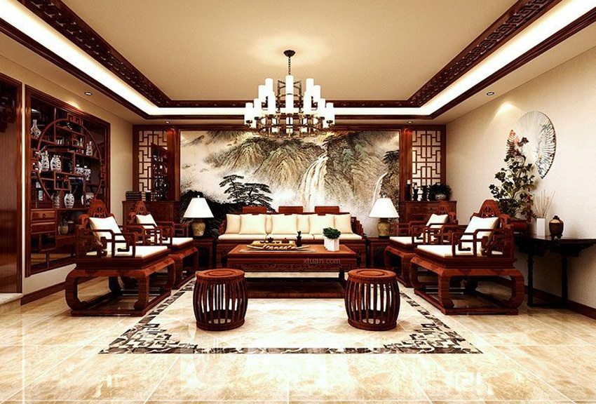
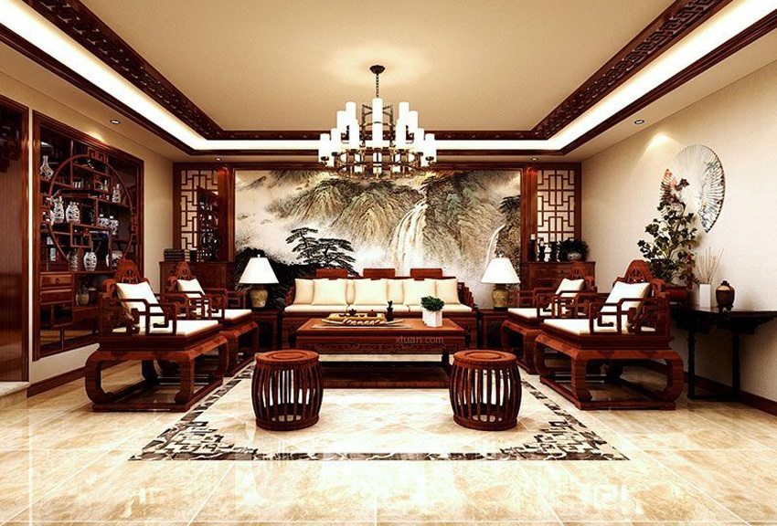
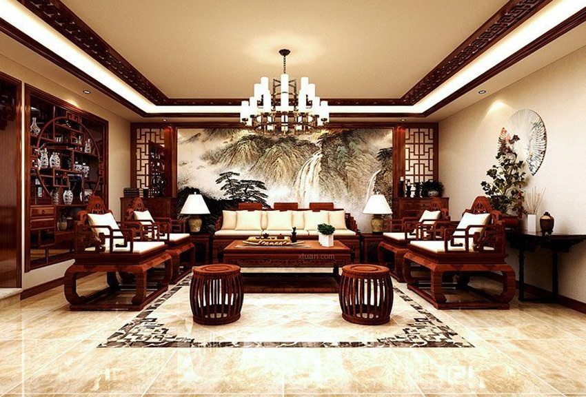
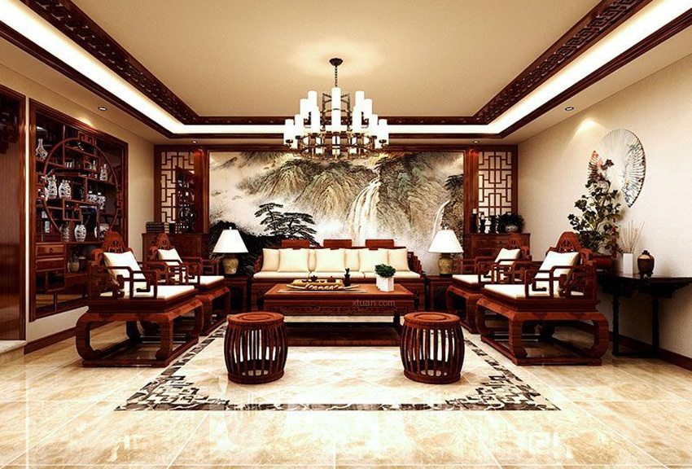

Chinese Style & New-Chinese Style
Traditional: Red, dark red, beige, etc.
New Chinese style: White, black, green, light blue, etc.
Traditional: Rosewood furniture, marble, wood, etc.
New Chinese style: Marble, wood, bamboo, etc.
The Chinese style gives a sense of solemnity and dignity.
There are two main styles of Chinese-soft furnishings that one is the traditional style, which typically features a large amount of rosewood furniture, such as sofas and coffee tables. , and this furniture is very heavy because it is made of solid wood. Traditional style walls often feature Chinese paintings or murals made by marble. The new Chinese style combines Chinese and modern aesthetics, and this style generally doesn't include rosewood tables and chairs, but it usually incorporates wood elements and ink painting motifs. Although rosewood sofas are not as comfortable as fabric sofas, the subtle fragrance emitted by the fine wood gives the room a unique ambiance. If you appreciate bamboo, ink painting, or tea culture, then this style is perfect for relaxation living.